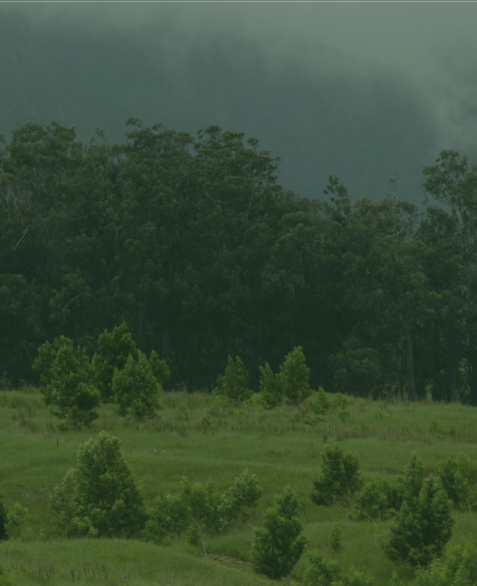

Growing native, biodiverse forests from seed to canopy.

Terraformation, founded by Yishan Wong, former CEO of Reddit, and based in Waimea, Hawaii. The company runs a Seed to Forest Accelerator training early-stage forestry teams, and its nonprofit arm, Terraformation.org Foundation, is a U.S. 501(c)(3).
Restoring degraded land into native, biodiverse forests that capture carbon and support communities. Projects use up to five times more native species than typical carbon-offset plantings, tracked with open-source software from nursery to canopy.
Founded in 2020. In November 2025 they appointed Jad Daley as president to help triple global native reforestation by 2030. Their accelerator has supported cohorts across Africa, Latin America, and Asia-Pacific.
Projects span Africa, Latin America, and the Asia-Pacific, plus native forest restoration in Hawaii at 'Iole in North Kohala. Individuals can fund a native Hawaiian tree from seed for $25.
Half of global forests are damaged or destroyed. Native, biodiverse restoration rebuilds habitat and resilience far better than monoculture planting, and long-term stewardship is what makes the carbon capture last.
Every contribution funds the full lifecycle — seed collection, nursery care, planting, and years of monitoring — so trees survive rather than just getting planted. The nonprofit arm charges zero fees or overhead to donors.